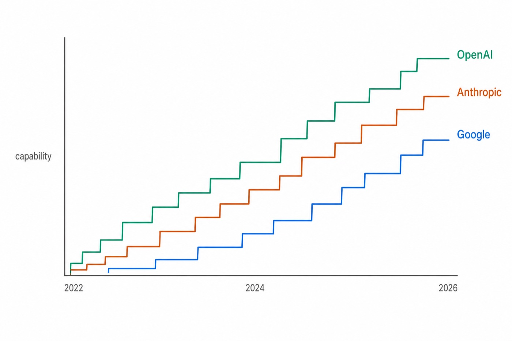
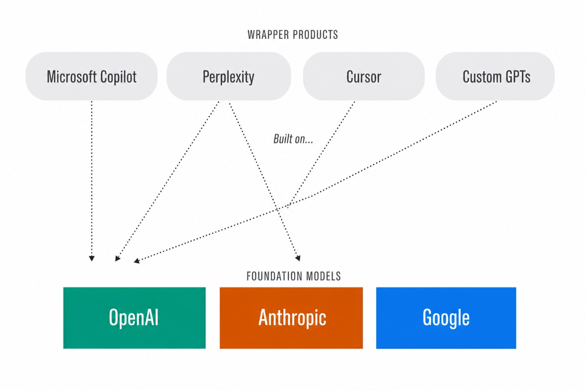
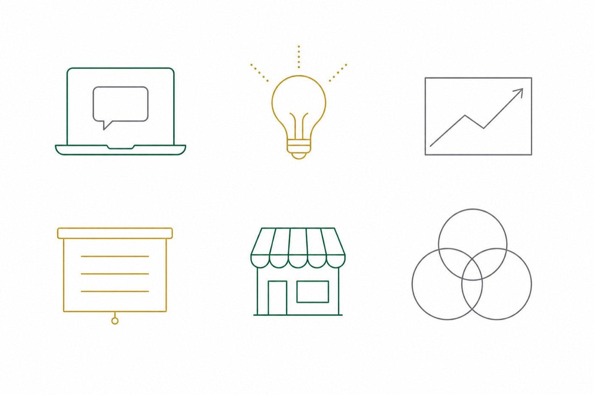

AI isn't what it was eighteen months ago.
The AI available in 2026 does something fundamentally different from the chatbots that arrived in 2022. The current versions of ChatGPT, Claude, and Gemini can read a hundred academic papers in one pass, build a working web application from a sentence of description, and string multi-step tasks together across a student’s email, calendar, and software without being asked twice. The technology has moved from answering questions to completing work. The institutional question is what to do about it.
Anything opens a plain-language explainer. Take them as needed; skip if you don't.
For a school that teaches building, the floor has moved.
Babson's reputation rests on producing graduates who actually start companies. Starting a company in 2026 is meaningfully different from starting one in 2024 — not because every venture is now an AI venture, but because the floor of what is possible solo has moved. One Babson student with three accounts can now produce in a week what used to take a small team a quarter. The institutional question is whether to put those three accounts into every student's hands — and how.
Choose your own path.
The next stop is a hub. From there, pick what you want to know first: who the three providers are and what each does best; what it costs at Babson scale; which peer institutions have already deployed which; or what Babson is already doing on the ground. Each path is two or three short scenes. You can take them in any order, in any combination, and stop whenever you're ready for the closing question.
OpenAI is the action company.
OpenAI’s strength is work — getting the AI to do things, not just describe how to do them. The April 2026 launch of lets students run multi-step workflows directly inside enterprise tools like Salesforce, Slack, and HubSpot. A founder can have the AI follow up on leads, post status updates to a team channel, or schedule customer interviews without writing a line of code for any of it.
The institutional offerings are and ChatGPT Business; the underlying model family is GPT-5.5. OpenAI partners run from Wharton (universal MBA access since 2024) through Oxford (campus-wide ChatGPT Edu since September 2025) to the California State University system (the largest publicly-disclosed deal at any peer).
Anthropic is the reasoning company.
Anthropic’s Claude is widely treated as the careful, literal one — best where precision and pedagogy matter more than speed. The flagship is Claude Opus 4.7. For higher education specifically, ships a feature called that guides students through reasoning steps rather than handing them the answer outright — closer to how a good faculty member teaches.
Anthropic's institutional partners include Northeastern (campus-wide across 13 global campuses, April 2025), London School of Economics (free Enterprise Claude for every LSE student and educator, May 2025), and Champlain College (a small private peer with two years of free Claude Pro, March 2025). The Champlain deal is the closest peer-shape to a Babson deployment.
Google is the senses company.
Google’s flagship is Gemini 3.1 Pro, currently the only major AI model that handles video alongside text, image, and audio in a single conversation — the practical meaning of . Pair that with a one-million-token context window and a single student can analyze hundreds of pages, a long video, and a spreadsheet at the same time.
Where OpenAI and Anthropic ship dedicated chat products, Google’s institutional strategy is integration. (launched April 2026) weaves Gemini directly into Gmail, Docs, Sheets, and Slides — the surface most students already use. Google’s published higher-ed footprint reaches more than 1,000 institutions and 10 million U.S. college students; named deployments include Rice and the University of Houston.

Loading the comparison table…
Where the three sit next to Microsoft Copilot.
Copilot is the AI surface Babson already runs — an excellent productivity layer threaded through Microsoft 365. The table above is not a verdict on Copilot; it's a map of what the foundation-model providers offer that wrapper products like Copilot inherit from them. Each cell links to its source. Click any “source” link to verify the underlying fact.
Read the rows the way a CIO would: where Copilot has a checkmark, the capability typically comes from OpenAI or another underlying lab; where it doesn't, the gap is usually about product surface, not whether Microsoft could build it. Both kinds of partnership — foundation provider and productivity layer — are likely the right answer for an entrepreneurship campus.
| Provider | List rate | × ~5,000 users × 12 months |
|---|---|---|
| OpenAI · ChatGPT Business | $20 / user / month | ~$1.2M / year |
| Google · AI Pro for Education | $15 / user / month | ~$0.9M / year |
| Anthropic · Claude for Education | Negotiated | Comparable order |
List pricing, applied to Babson's scale.
Per-user list pricing is now well inside what institutions spend on routine software. For Babson's roughly 5,000 active students, faculty, and staff, each provider works out to about $0.9 to $1.2 million per year at list, before education-tier or volume discounts. Education-tier discounts and volume pricing typically reduce these figures further.
Annual envelope at list pricing
Education-tier discounts and volume pricing typically reduce these figures by 30 to 60 percent. For reference, Cal State’s negotiated deal worked out to roughly $1.88 per user per month — far below list. Negotiated outcomes vary by institution.
Roughly one endowed chair, per year, per provider.
The mental anchor that fits Babson's accounting is the endowed faculty chair — a familiar budget category. At the lower end of the envelope, the annual cost is comparable to a single chair's payout, but recurring and reaching the full active campus rather than one faculty line. The scale floor: California State University's deal with OpenAI was $17 million over 18 months for more than 500,000 users — the largest publicly-disclosed peer-institution AI commitment. Single-school deals at Wharton, Oxford, Northeastern, and others have not been disclosed in dollars.
Loading the timeline…
Where each provider has landed.
Each provider has built a public reference list at the top of higher education. OpenAI spans Arizona State, Wharton, UCLA, Duke, the CSU system, Oxford, and Vanderbilt. Anthropic covers Champlain, Northeastern, LSE, and Harvard's Faculty of Arts and Sciences. Google reaches Rice, the University of Houston, and a thousand more institutions covering ten million U.S. college students. None of these deployments is a pilot; all are committed campus-wide or system-wide arrangements. Click any dot below for the source announcement.
Different shapes, same direction.
The peer field has not converged on a single template. Different schools made different shapes: a universal MBA-license at Wharton; a single-provider campus-wide deal at Northeastern; a curriculum-funding grant program at Stanford; a system-wide deployment at CSU. The shared signal is direction, not form: each of the elite peers Babson watches picked at least one of the three providers and made an institutional commitment. Babson currently has none formally in place.
Babson's AI infrastructure already exists.
None of this lands on empty ground. The Generator, founded by Erik Noyes (a co-author of this brief), is Babson's interdisciplinary AI lab. It runs hands-on programs through the Weissman Foundry — including the AI Innovators Bootcamp (faculty and students paired with small-business owners to build AI prototypes), the annual Generator Build-a-thon (~500 students from Boston-area universities each spring), and an ongoing collaboration with Microsoft on small-business AI agents.
What's missing is the upstream provider relationship. The infrastructure is here; the formal model-layer commitments are not yet.

Four projects, all live, all student-built.
Behind the infrastructure are real student projects already shipping with AI tools. Each project below is publicly accessible; each has a verifiable Babson connection. They are the everyday output of the lab the brief describes — and the closest evidence of what direct provider access at Babson would unlock at scale.
The question is whether to give Babson students direct access.
The full briefing addresses the procurement detail, including how this complements the Microsoft Copilot work Babson already runs. The walkthrough ends here; the briefing picks up where you choose. Either way, the decision belongs to fall 2026.